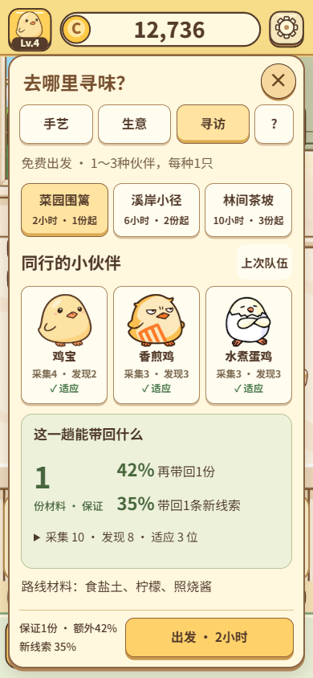
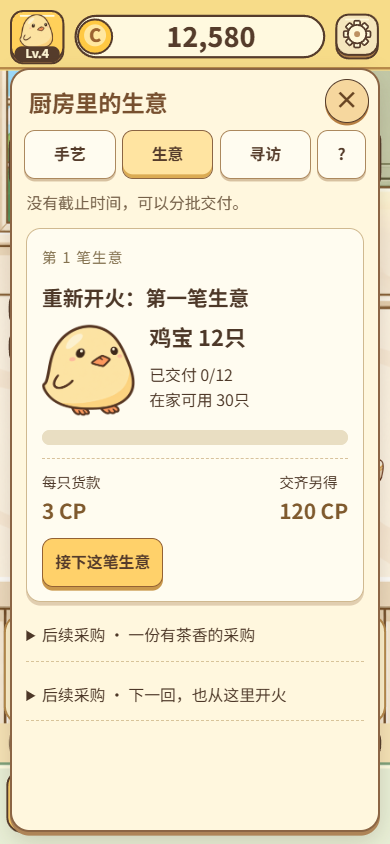
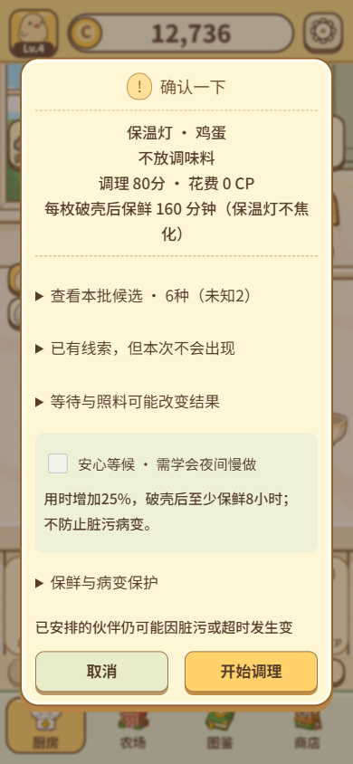
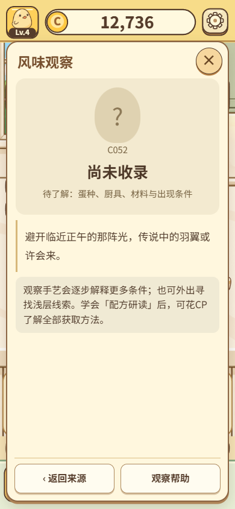

鸡宝厨房 · 第二轮优化
实际运行 → 截图检查 → 调整 → 再次验证。保留现有角色与暖色厨房纸张风格。完整交付报告与30项手艺 · 本轮交互检查记录
截图使用隔离测试存档。成熟进度与时间推进用于覆盖状态，不代表自然游玩或手机真机效果。
手艺 · 前后对比
 优化前 · 上一阶段审查
优化前 · 上一阶段审查 优化后 · 本轮实际运行
优化后 · 本轮实际运行寻访配队 · 前后对比
 优化前 · 上一阶段审查
优化前 · 上一阶段审查
优化后 · 本轮实际运行采购 · 前后对比
 优化前 · 上一阶段审查
优化前 · 上一阶段审查
优化后 · 本轮实际运行开火 · 前后对比
 优化前 · 上一阶段审查
优化前 · 上一阶段审查
优化后 · 本轮实际运行观察 · 前后对比
 优化前 · 上一阶段审查
优化前 · 上一阶段审查
优化后 · 本轮实际运行关键状态